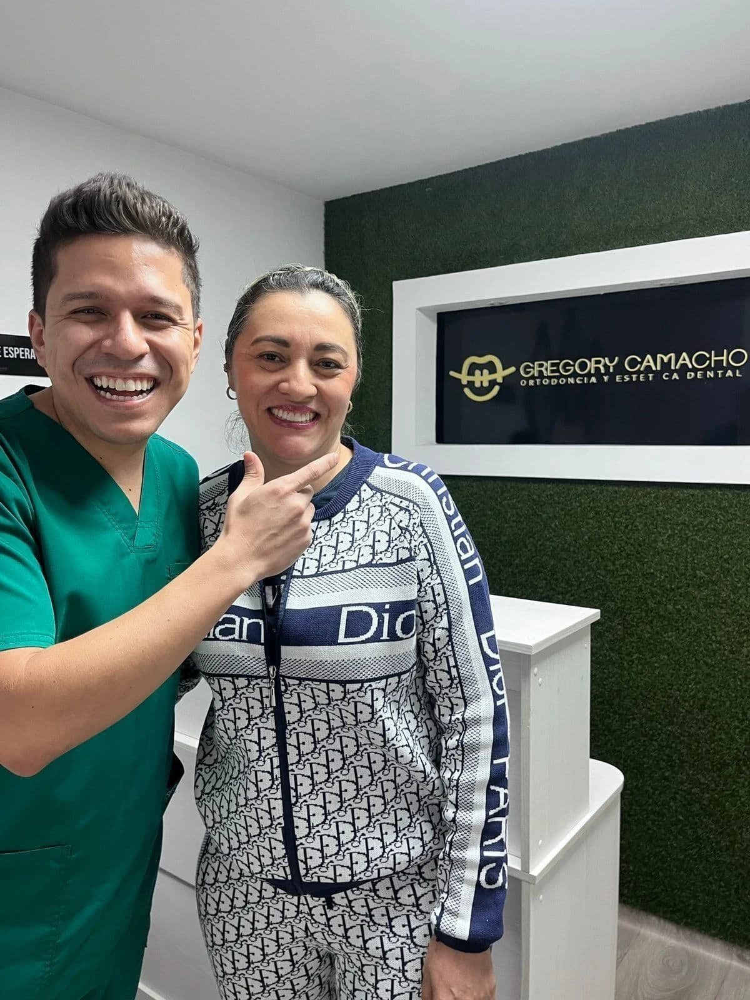
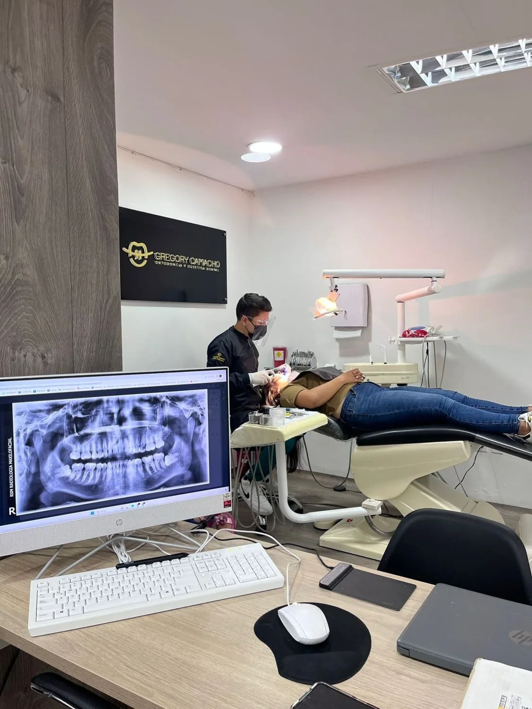

Cómo comienza una valoración virtual
Video del profesional, versión breve para redes y adaptación al inglés, con revisión antes de publicar.
Ortodoncia, estética e implantes con embudos separados y continuidad medible.

La web menciona expresamente USA y Canadá, atención bilingüe y consulta virtual. Proponemos evaluar la conversión y el seguimiento por tratamiento sobre esa base ya existente.
Sitio público revisado ↗Esta es una hipótesis de trabajo basada en información pública. En la reunión validaremos prioridades, capacidad y herramientas actuales.
Una dirección visual centrada en ortodoncia y planeación de sonrisa, con material propio y un recorrido pensado para comenzar una conversación desde el exterior.

El diseño organiza la oferta alrededor del enfoque distintivo de la práctica. La agenda y el asistente muestran cómo podría sentirse la experiencia conectada.
Demostración independiente: no representa contratación, no agenda citas reales ni conecta todavía una IA. La implementación final se define con el equipo.
Conectar contenido, búsqueda y campañas viables con una página relevante, una respuesta oportuna y un responsable del siguiente paso.
Probar mensajes y audiencias según tratamiento e idioma. Acordar mercados, capacidad de respuesta y criterios de calidad antes de ampliar inversión. Medir valoraciones y avance comercial junto con alcance y comunidad.
Explora las etapas propuestas. El CRM reúne origen, estado, próxima acción y responsable para que recepción, coordinación y clínica compartan contexto.
Cada contacto conserva una próxima acción o un motivo de pausa. La historia clínica y las decisiones profesionales se gestionan en los sistemas adecuados; el pipeline comercial evita duplicar información sensible innecesaria.
Automatizaciones conectadas a las herramientas que el equipo apruebe. Las funciones se activan por etapas, con pruebas, registro de actividad y transferencia humana.
Responder preguntas administrativas, preparar tareas, coordinar horarios y ordenar seguimiento. El criterio clínico permanece en manos de los profesionales.
Explica las etapas generales de ortodoncia, estética e implantes usando contenido aprobado.
Coordina la zona horaria y las confirmaciones de consulta virtual con disponibilidad real.
Genera tareas para el equipo según el plan indicado y recuerda controles autorizados.
Consolida origen, respuesta, asistencia y avance por ruta para decidir qué campañas ampliar.
Solicitud ficticia desde Canadá, con interés en ortodoncia y planeación de sonrisa.
Respuesta administrativa preparada en el idioma elegido.
Próxima tarea asignada al coordinador correspondiente.
Recordatorio preparado para revisión según consentimiento y estado.
Pulsa el botón para explorar la simulación. No se envían mensajes.
Una línea editorial propia, a partir de la voz del profesional y material real. Estas son tres primeras piezas para conversar con personas en USA y Canadá.
Video del profesional, versión breve para redes y adaptación al inglés, con revisión antes de publicar.
Video del profesional, versión breve para redes y adaptación al inglés, con revisión antes de publicar.
Video del profesional, versión breve para redes y adaptación al inglés, con revisión antes de publicar.
Diseñar una ruta de recomendaciones voluntarias, registrar el origen de cada contacto y evaluar alianzas con actores pertinentes de la experiencia internacional. Condiciones, permisos e incentivos se definen antes de activar el programa.
El seguimiento usa canales autorizados, límites de frecuencia y opción de baja. La viabilidad del remarketing publicitario se revisa según las políticas aplicables a servicios de salud.
Un horizonte inicial de 90 días para conversar, sujeto a alcance, accesos y capacidad del equipo. Cada fase tiene un resultado revisable.
Revisar proceso actual, definir ruta prioritaria, responsables, contenidos y métricas. Ajustar la web con información aprobada.
Integrar agenda y CRM acordados, probar respuestas, derivaciones y recordatorios. Activar captación con alcance controlado.
Revisar conversaciones, asistencia, carga del equipo y avance. Corregir antes de ampliar rutas o volumen.
Elegir una ruta inicial y medirla de principio a fin. Separar campañas de estética de las de ortodoncia para no mezclar tiempos de decisión ni necesidades de seguimiento.
Tiempo hasta primera atención útil y transferencia humana.
Solicitudes, agendamiento y asistencia por origen.
Próximas acciones cumplidas y motivos de pausa.
Carga administrativa y tareas pendientes por responsable.
Una reunión para entender prioridades y acordar un alcance que tenga sentido para la práctica. La propuesta no incluye precios ni compromisos de resultados.
Selecciona los temas que más te interesen. El botón prepara un mensaje para Samuel; tú decides si enviarlo.